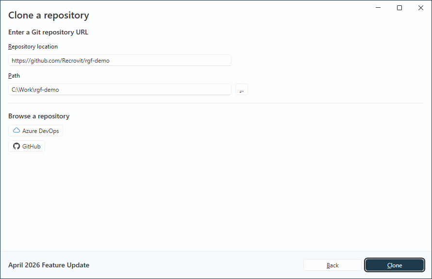
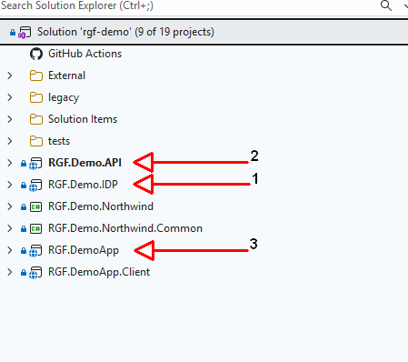
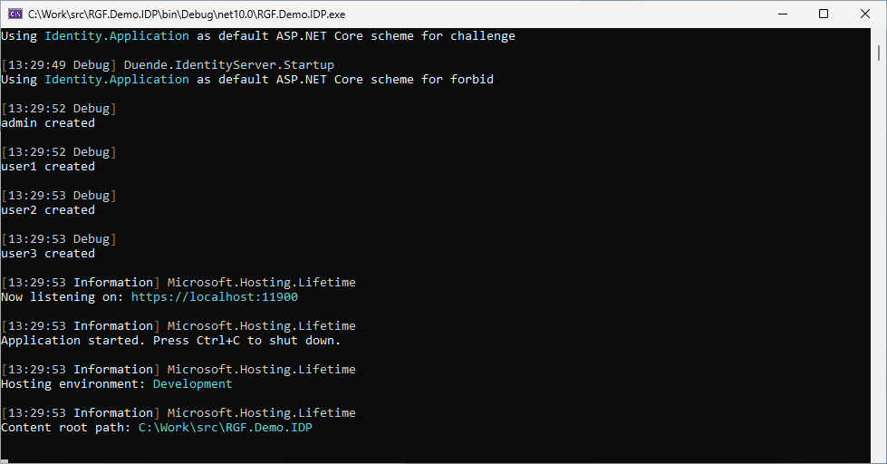
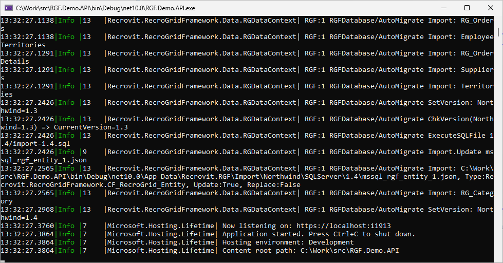
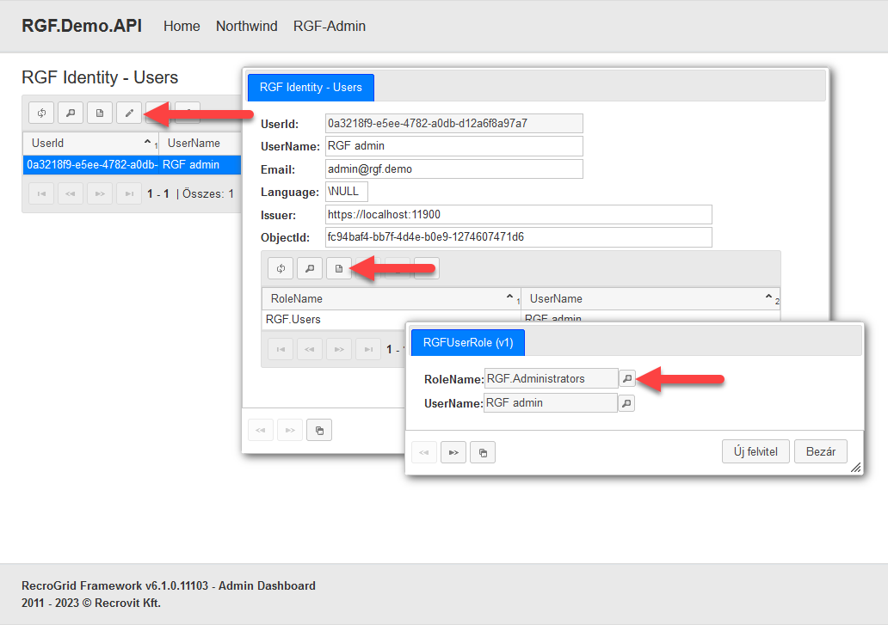
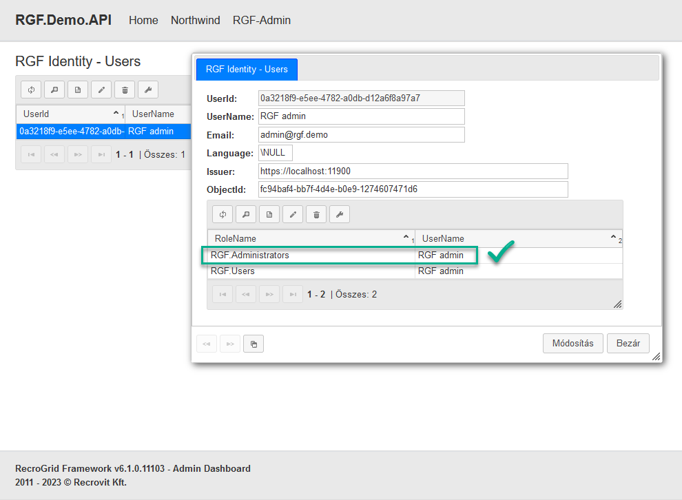
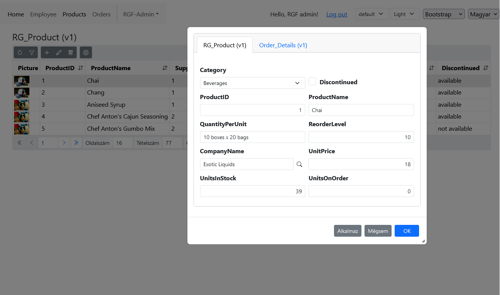

Demo
Latest
RGF.Demo Latest Project
A fully functional demo project is available on GitHub.
- .NET Core API
- Blazor App
- Blazor Client (Bootstrap, DevExpress, Radzen, Syncfusion, Telerik)
- Identity Provider (Duende)
- Northwind database (SQL Server, Postgre SQL, Oracle)
Clone Repository
Clone Repository
Download the project via the command line
git clone https://github.com/Recrovit/rgf-demo
Download the project using Visual Studio. Open Visual Studio, choose the Clone a Repository option, and provide the address of the RecroGrid Framework Demo project.
https://github.com/Recrovit/rgf-demo

Start the demo
How to start the demo
This section describes how to start the demo locally. Start the projects in the following order, and wait until each application has started successfully before continuing to the next one.

- RGF.Demo.IDP This identity provider project handles authentication and sign-in for the demo. Start this first, then wait until the console shows that it has started completely.

- RGF.Demo.API This backend API project provides the business logic, data access, and the server-side RGF functionality. Start it only after the IDP is already running, and again wait until startup has fully completed.

- RGF.DemoApp This is the demo client application and user interface, and it depends on the previous two projects. Start it only after both the IDP and the API are already running and ready to serve requests.
Authentication
Setting up the administrator
The first user who signs in automatically receives administrator privileges. This ensures that the administration interface is available immediately after the demo is started for the first time.
User permissions can be configured from the administration interface. On the admin page, open the RGF Identity - Users view.



DevExpress / Telerik
Private NuGet Feed
To use DevExpress and Telerik components, you need to set up a private NuGet Feed. More information about their usage is available on the manufacturers' websites.
After successful setup, you need to enable the use of the component in the project settings (RGF.Demo.Blazor.csproj)
<PropertyGroup>
<DefineConstants>$(DefineConstants);DevExpressEnabled</DefineConstants>
<DefineConstants>$(DefineConstants);TelerikEnabled</DefineConstants>
</PropertyGroup>